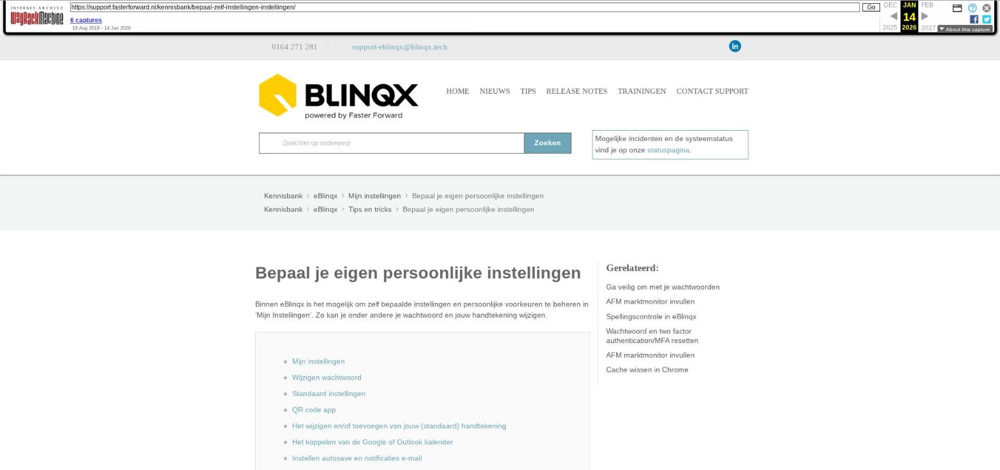

Bepaal je eigen persoonlijke instellingen

Tekstinhoud
Bepaal je eigen persoonlijke instellingen
Binnen eBlinqx is het mogelijk om zelf bepaalde instellingen en persoonlijke voorkeuren te beheren in 'Mijn Instellingen'. Zo kan je onder andere je wachtwoord en jouw handtekening wijzigen.
Mijn instellingen
Wijzigen wachtwoord
Standaard instellingen
QR code app
Het wijzigen en/of toevoegen van jouw (standaard) handtekening
Het koppelen van de Google of Outlook kalender
Instellen autosave en notificaties e-mail
E-mailadressen automatisch prefillen bij e-mailen vanuit klantdossier
Instellen van de timer
Het tonen van (systeem)registraties
Persoonlijke API koppelingen intrekken
Inloggegevens koppelingen
Startpagina dossier
Mijn instellingen
Mijn instellingen vind je helemaal rechts als snelkoppeling boven in het menu.
Bij 'Mijn instellingen' kan je de volgende zaken zelf regelen en beheren.
Wijzigen wachtwoord
Hier lees je meer over het wijzigen van jouw wachtwoord voor eBlinqx.
Standaard instellingen
Onder jouw gebruikersaccount kan je diverse standaard instellingen aanpassen. Zo kan je de volgende zaken aangeven:
Taal: in welke taal eBlinqx moet staan
Startpagina login: op welke pagina je uit moet komen na het inloggen in eBlinqx
Startpagina dossier: waar je in het dossier uitkomt als je een dossier opent
Toon dossier wizard: het wel of niet tonen van de dossierwizard
Standaard mailbox: de e-mailbox die automatisch wordt geselecteerd bij het opstellen van een e-mail. Indien hier geen e-mailadres staat ingesteld dan komt er een rood uitroepteken bij het icoon (envelop) van de e-mailmodule te staan
E-mail kolomweergave: hiermee kan je aangeven of de e-mails in de e-mailmodule in de kolomweergave of lijstweergave getoond moeten worden
Standaard kantoor: het standaard kantoor waar je onder valt
QR code app
Als je de Faster Forward On Route app wilt instellen en gebruiken, dien je bij het eerste keer instellen de QR code te scannen. Deze QR code is zichtbaar onder Mijn instellingen. Zodra je de QR code hebt gescand, verdwijnt deze uit het scherm.
Het wijzigen en/of toevoegen van jouw (standaard) handtekening
Over het wijzigen of het toevoegen van jouw handtekening kan je hier meer lezen.
Ook is het hier mogelijk om de handtekening voor tekenen voor gezien in te stellen. Hier lees je er meer over.
Het koppelen van de Google of Outlook kalender
Hier lees je meer over het koppelen van de Google kalender. Hier lees je meer over in het instellen van de kalendersynchronisatie bij de Outlook kalender.
Instellen autosave en notificaties e-mail
Onder het tabblad Instellingen – Overige kan je de autosave voor documenten en e-mails instellen. Hier kan je ook de e-mailnotificaties instellen.
E-mailadressen automatisch prefillen bij e-mailen vanuit klantdossier
Wanneer je een e-mail opstelt vanuit het dossier kan je het zo instellen dat de e-mailadressen van de ontvanger automatisch gevuld worden met het e-mailadres van de eerste aanvrager en partner. De e-mailadressen moeten dan wel het type Algemeen hebben. Dit gebeurt alleen bij het opstellen van een nieuwe e-mail. Deze optie kan je beheren via Mijn instellingen – Instellingen – Overige. Bij 'Ja' worden de e-mailadressen automatisch ingevuld. Bij 'Nee' blijft het veld 'Aan' leeg bij het opstellen van de e-mail. Deze moet je dan handmatig vullen.
Instellen van de timer
Het is mogelijk om automatisch tijd te registeren in een dossier. Hiervoor kan je de timer instellen. Dit kan je instellen onder het tabblad Instellingen – Overige. Hier lees je er meer over.
Het tonen van (systeem)registraties
Onder het tabblad Overige kan je ook instellen hoeveel registraties je op de pagina wilt zien en of je systeemregistraties standaard wel of niet wilt tonen.
Persoonlijke API koppelingen intrekken
API koppelingen op gebruikersniveau kunnen ingetrokken worden op het tabblad Algemeen onder accestokens.
Inloggegevens koppelingen
Via het tabblad Instellingen – Koppelingen is het mogelijk om de inloggegevens in te vullen van diverse koppelingen. Bij sommige koppelingen, bijvoorbeeld VKG en Figlo, is het nodig om deze inloggegevens in te vullen om de koppeling te laten werken.
Startpagina dossier
Op de startpagina van een dossier zijn verschillende blokken te zien, bijvoorbeeld Registraties, Correspondentie, E-mail en Openstaande facturen. Je kunt zelf bepalen welke blokken je wilt zien op een startpagina van een dossier. Via Mijn instellingen – Instellingen – Startpagina dossier kan je aanvinken welke blokken je wilt zien:
En of de blokken automatisch uitgeklapt moeten zijn:
Laatste update: 15 oktober 2025
Was deze informatie nuttig?
Ja Nee